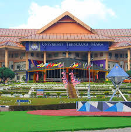

SJK (C) Taman Tas
2011-2016
I study at mandarin school for 6 years which help me learn a new language that i barely speak in my life. The environment there might be different from others because i mostly being friend with chinese people and only speak mandarin and teacher also teach subject also in mandarin except for Bahasa Melayu, English and others.

SMK Gudang Rasau
2017-2021
I learn in SMK Gudang Rasau which also mix with other races, that also easy for me to speak and learn with each other because i have being taught before in primary with other races learning environment so that i can adapt with the secondary vibe.
Universiti Teknologi Mara Kampus Machang Cawangan Kelantan
2022-2025
Currently I was studying my diploma at UiTM Machang in Information Management.I learn a lot of new knowledge on how to manage the information. In my diploma study, it quick shock for me to being far from home to study. This diploma era lead me to be more independant from many terms of life learning. The people also different from my primary and secondary schools and this diploma era teach me more tough about life ad also future build